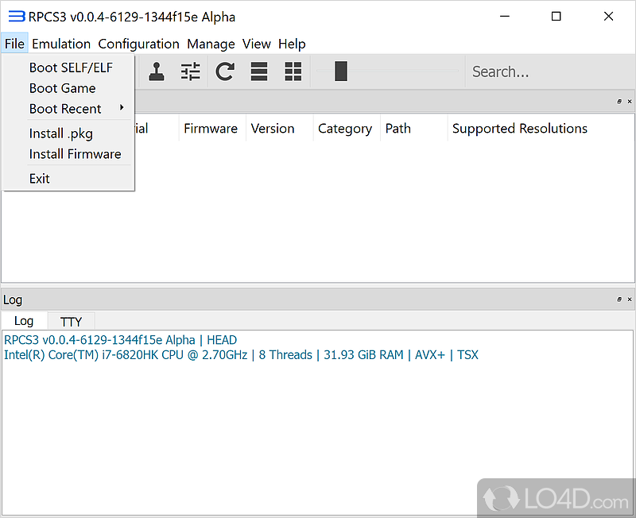
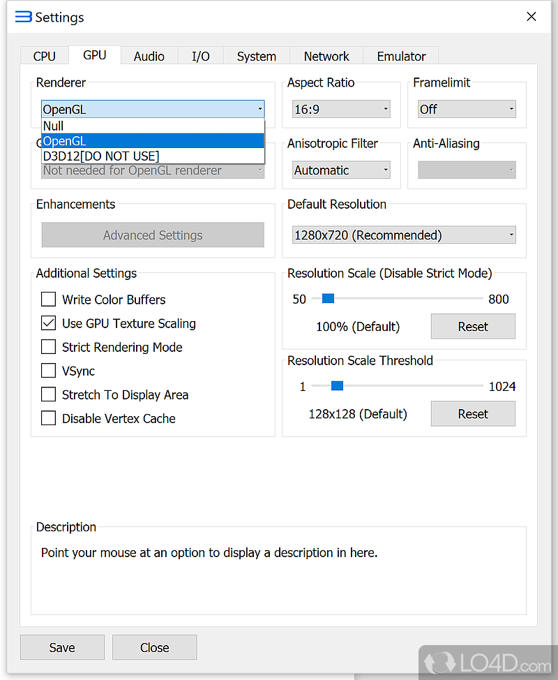

RPCS3 入坑前必看的四个翻车现场
看着解压即用，其实暗藏四个让新人反复重装的坑——解压位置、运行库、锁帧误区、兼容等级误读，每个都踩过才算真入门。
开头：我以为装个模拟器能有多难
第一次碰 RPCS3 是在一台朋友的老台式上。那时候刚迷上《神秘海域》的画面片段，搜到它的官网上明确标注了 PC 版可用，兴冲冲下了压缩包往 Program Files 一扔，双击——界面是出来了，但每次改完设置关掉重开，全部回到默认值。我以为是压缩包损坏，重下三次还是一样，最后差点放弃。
后来才发现，这种"看着简单其实有坑"的情况，在 RPCS3 身上至少能列出四个。每个我都踩过，有些还不止一次。写下来是希望你别再走老路。
坑一：解压到 Program Files，然后设置存不上
症状：改完分辨率、渲染器选项，关掉模拟器重开，全部还原。有时候连缓存生成都失败，启动日志里全是拒绝写入的错误。
原因：我一开始以为是模拟器本身的 bug，实际上是 Windows 的 UAC 权限机制在搞事。RPCS3 配置文件、缓存、日志全部写在它自己的安装目录下，不是 AppData 也不是用户目录。把它塞进 Program Files（哪怕是 64 位的那个），写入操作会被系统静默拦截或者重定向到一个你找不到的虚拟路径。
解法：解压的时候就选对地方。推荐一个独立目录，比如 D:\rpcs3\，路径里尽量别带中文（中文路径偶尔会让某些游戏的资源加载出怪毛病）。我自己现在就老老实实放在 D 盘根目录下，用了两年没再碰过权限问题。
还有一件事值得提：不要下任何"捆绑安装版"或者"高速下载器"。RPCS3 本身是纯解压即用的开源项目，根本不需要安装器。第三方安装包几乎可以肯定是挂了东西的假货。认准官方下载就好。

坑二：启动直接报缺 DLL，然后到处找补丁
症状：双击 exe，瞬间弹一个错误框，大意是"找不到 VCRUNTIME140.dll"，或者类似的运行库缺失提示。
原因：Windows 默认并不自带 Visual C++ 2022 运行库。RPCS3 的底层用了这套运行时，缺它就起不来。我当时的第一反应是去 C 站下一个单独的 dll 文件往 System32 里塞——这是很多人下意识的操作，也是最危险的操作。从不知名站点下的 dll 很可能被篡改，而且系统级的替换操作本身就可能触发反作弊或者安全软件的警觉。
解法：老老实实去微软官方支持页下载 Visual C++ Redistributable 的 x64 版本，装完重启电脑就行。这是一个几十 MB 的官方安装包，装一次终身受益。同样需要留意的还有显卡驱动——Vulkan 渲染器依赖较新的驱动，下拉列表里找不到 Vulkan 选项的时候，先检查驱动是不是最新的，不要急着换渲染器。
坑三：把模拟器锁帧当 60 帧补丁用
症状：30 帧的游戏强行锁到 60，画面是流畅了，但角色走路像在溜冰、格斗游戏连招对不上判定窗口、竞速游戏计时器跑飞。我第一次在《鬼泣》里把锁帧开到 60，结果所有敌人的攻击都提前半拍打过来，完全没法玩。
原因：这是 RPCS3 的 Frame Limit 选项最容易被误解的一点。模拟器的锁帧，本质是给 GPU 输出加一个节拍器——帧数高于限值时等待。但 PS3 当年的游戏，物理引擎、碰撞判定、计时器几乎全部按固定帧率精心调校。你强行锁到一个游戏没预期的值，就等于把整套游戏内部逻辑的时间轴打乱了。
解法：Frame Limit 只该用在"游戏本来就能跑满 60 帧，偶尔掉帧想稳住"的场景。想让 30 帧游戏真的跑到 60，正确工具是社区 60 帧补丁——这些补丁修改了游戏内部逻辑，让物理和判定也按 60 帧走。在游戏列表里右键，找到补丁管理，拉一下最新补丁库就能看到社区已经做好的补丁清单。版本要对上，否则不生效或者出新 bug。
记住这个区分：模拟器锁帧 = 遮丑用的，补丁 = 正道。

坑四：看见"可玩"二字就开跑，然后被兼容性扇脸
症状：对着官方兼容表的"可玩"等级兴冲冲加载进去，结果要么过场动画全程闪烁、要么存档界面一打开就崩溃、要么玩到一半突然闪退丢了进度。我在《最终幻想 XIII》上栽过一次——兼容表标可玩，但存档界面的渲染有个已知 bug，一打开就闪退。
原因：RPCS3 的兼容等级是个五档体系（可玩、进游戏、进开场、能加载、无反应），但"可玩"只代表"流程走得通，没有硬性障碍"，不代表"满速、无已知 bug、存档安全"。每个游戏的详情页里其实还藏着已知问题清单、推荐设置、版本备注这些关键信息——我当时没看，直接按等级字面理解了。
还有一个容易误读的点：等级描述的是"当前最新构建"。同一个游戏半年前的等级和现在可能完全不同，别把去年搜到的博客文章里的结论当作今年的真相。
解法：查兼容表之前，先翻一遍rpcs3文档里每个游戏的详情页——已知问题、推荐设置、版本备注都写在那里。存档操作尽量在每次大里程碑之后做一次，不要赌"可玩"就等于零 bug。另外"可玩"也不代表"满速"——等级解决能不能玩，你的 CPU 配置解决顺不顺，这是两件事，都要查。
防坑清单（一句话速查）
- 解压位置选独立盘根目录，别塞 Program Files，别带中文路径。
- 缺 DLL 就装微软官方 VC++ 运行库，别去 C 站找单独文件。
- 30 帧想变 60 用社区补丁，模拟器锁帧只给本来就能 60 帧的游戏稳速。
- 兼容等级只表示流程能走通，每个游戏的已知问题和推荐设置一定要看。
- 下载渠道只认官方，任何第三方"高速下载器"都是假货。
最后
知道这些坑之后，RPCS3 其实是个相当省心的项目——解压即用，滚动发版，社区补丁生态也活跃。这篇文章里提到的这些避坑经验和项目资料，我同步到了GitHub、Gitee、GitCode 三个仓库，毕竟国内各平台访问差异大，多份备份总不是坏事。踩过这几个坑，后面就是踏踏实实玩游戏了。